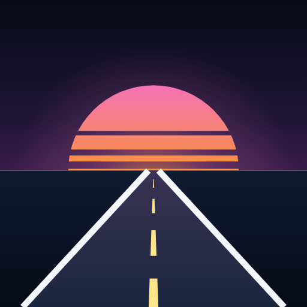
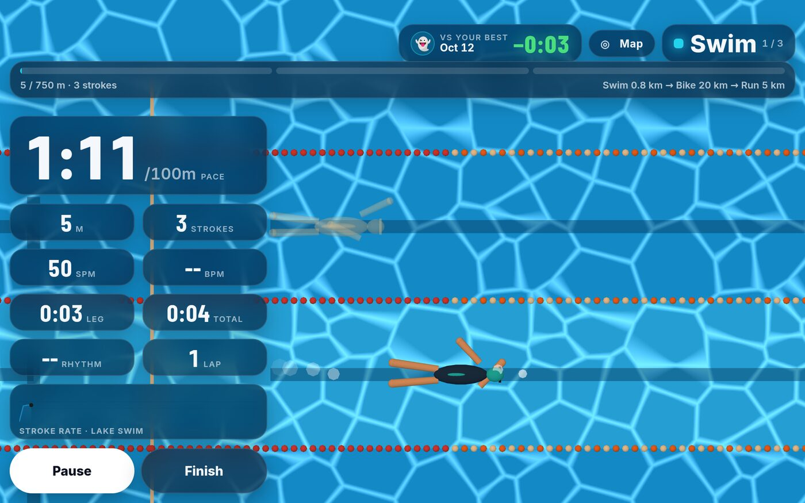
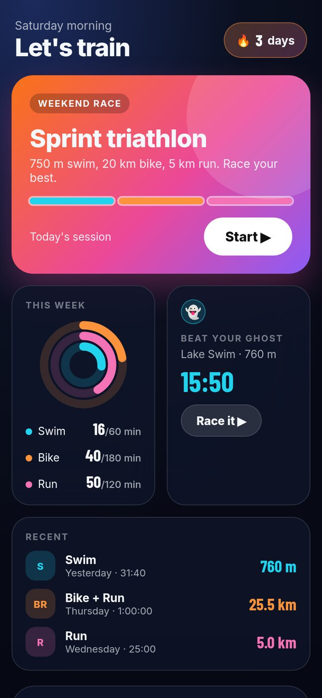
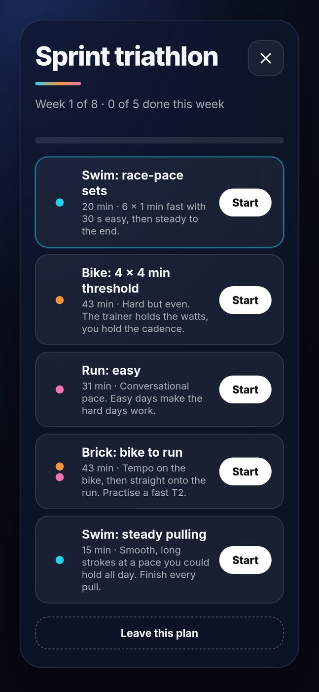
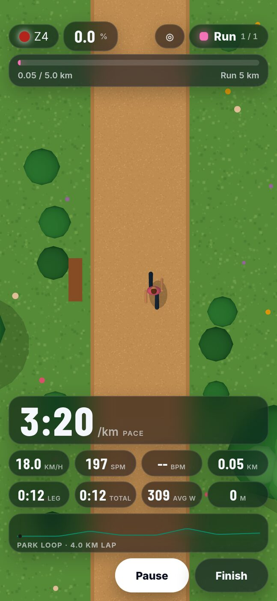
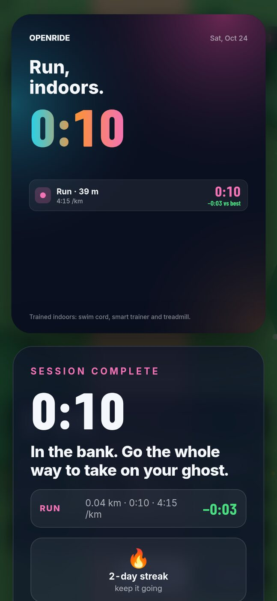
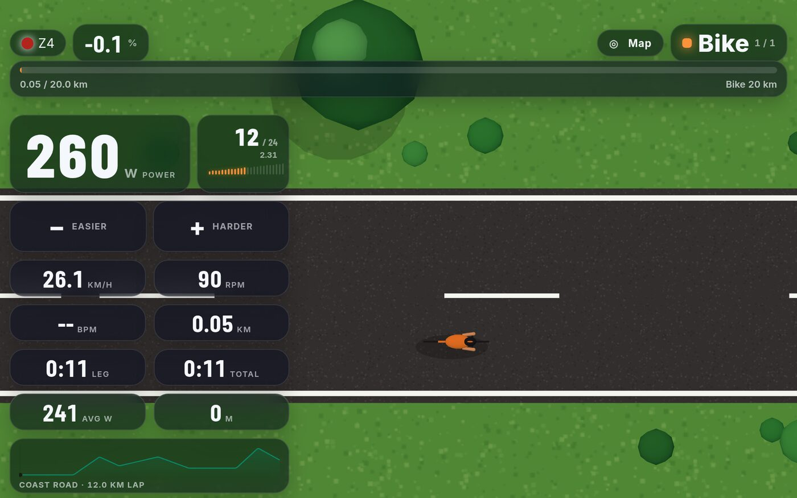

OpenRideThe free triathlon trainer for your living room. Swim on a stretch cord with strokes from your Garmin watch, ride your smart trainer, run on your treadmill, and race your own ghost in every one.
Android 8 or newer. iPhone is not supported yet.

Every other indoor app does one sport. OpenRide runs a whole triathlon in one session, timing your transitions like race day.
Strokes, stroke rate and rhythm come straight from your Garmin watch running the free Swimcord watch app.
Structured workouts held in ERG, virtual shifting with a Zwift Click, and routes with real climbs.
Speed and incline from your treadmill or a foot pod, with run workouts set from your 5 km time.
Your best effort on every course swims, rides or runs beside you, with a live gap in seconds.
Get started in 4 weeks, or build to a sprint or Olympic triathlon. Built from your own numbers.
No account and no tracking. Sessions are saved as standard .tcx files for Strava or Garmin Connect.
Real screenshots from the app.





Swimcord is the swim half: a Garmin watch app that counts every pull on a stretch cord, and a phone app with guided cord workouts, a four-week plan and an overhead pool to race your ghost in. OpenRide uses it for swim legs, or use Swimcord on its own.
Use what you have. Every sport also works with no sensors at all, so you can try it first.
Yes. No ads, no account, no trial. Paid extras may come later; what is free now stays free.
It will be. Until then it is installed straight from this site, which is why Android asks for permission.
No. Use any sport on its own, and any leg without its sensor using the on-screen controls.
You pull on a stretch cord anchored in front of you, the way swimmers train on land. The Swimcord app on your Garmin watch counts every stroke from the watch's motion sensor and sends it to your phone over Bluetooth.
In the app, Settings → Beta feedback. Or use the feedback forms, including one for telling us which trainer or treadmill you use.
Nowhere. It stays on your device. See the privacy policy.